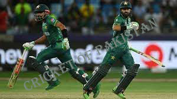

In cricket, batting is the most important aspect of the game. A good batting performance can win matches for a team. Batting is a skill set that takes many years to develop, and a good batsman needs to have good technique, good balance, and good timing.
A batsman, or player who bats, tries to hit the ball as hard as possible so that it travels over the boundary and into the opponent's territory. The batting order is the order in which the batsman bats. The first batsman in the batting order is the lead batsman. The other batsman in the batting order is the number three batsman. The number four batsman is the next batsman, and so on. The lead batsman is the first batsman to bat. The number three batsman is the next batsman to bat if the lead batsman is not batting. The number four batsman is the next batsman to bat if the lead batsman is batting and the number three batsman is not batting. The number five batsman is the next batsman to bat if the lead batsman is batting and the number four batsman is not batting. The number six batsman is the next batsman to bat if the lead batsman is batting and the number five batsman is not batting. The number seven batsman is the next batsman to bat if the lead batsman is batting and the number six batsman is not batting. The number eight batsman is the next batsman to bat if the lead batsman is batting and the number seven batsman is not batting. The number nine batsman is the next batsman to bat if the lead batsman is batting and the number eight batsman is not batting. The number ten batsman is the next batsman to bat if the lead batsman is batting and the number nine batsman is not batting.
Cricket is a bat-and-ball sport played between two teams of eleven players. Each batsman tries to score as many runs as possible by hitting the ball over the fielders' heads into the opposing team's end. The team with the most runs at the end of the game wins. Batting is one of the most important aspects of cricket. A batsman's job is to score as many runs as possible, and the more important his role is, the more important it is to make good batting decisions. A batsman's batting position, his stance, and the type of bat he uses all play a role in his ability to score runs. There are three types of bats in cricket: the open bat, the middle-of-the-road bat, and the closed bat. Open bats are the most common type and are used by most batsmen. They have a large head and are easy to hit the ball with. Middle-of-the-road bats are used by batsmen who want to hit the ball hard but not too hard. They have a medium head and are harder to hit the ball with than an open bat. Closed bats are used by batsmen who want to hit the ball hard. They have a small head and are hard to hit the ball with. A batsman's batting position is important too. He can be at the front of the batting order, the middle of the batting order, or the back of the batting order. The front of the batting order is the most important position and is usually occupied by the batsman with the best batting average. The back of the batting order is the least important position and is usually occupied by the batsman with the worst batting average. A batsman's stance is also important. He can be in the classic stance, which is a standing position with the feet close together, or he can be in the open stance, which is a standing position with the feet apart. The classic stance is easier to hit the ball with than the open stance, but the open stance is better for hitting the ball hard. The type of bat a batsman uses is also important. He can use a round bat, a square bat, or a thin bat. A round bat is the easiest to hit the ball with and is used by most beginning batsmen. A square bat is harder to hit the ball with than a round bat and is used
Pakistan Batting line
Pakistani batting line-up of Babar Azam and Mohammad Rizwan is one of the deadliest in cricket. Babar Azam is a versatile off-spinner and Mohammad Rizwan is a powerful batsman. Together, these two have scored some of the most memorable runs in Pakistani cricket history. Babar Azam has been a part of the Pakistani cricket team since 2016 and has cemented himself as one of the best off-spinners in the world. He has taken 340 wickets in international cricket and has an impressive economy rate of just over 4.00. He has also scored 12 centuries and 38 half-centuries in international cricket. Mohammad Rizwan is one of the most feared batsmen in world cricket. He has scored over 10,000 runs in Test and ODI cricket and has an average of over 50. He has also scored a few centuries in international cricket. Together, these two players form one of the deadliest batting line-ups in world cricket.
Pakistan’s batting line-up of Babar Azam and Mohammad Rizwan has been one of the revelations of the World Cup 2019. The pair have put on a magnificent batting display, smashing centuries against all kinds of oppositions. Babar Azam is already the leading run-getter of the World Cup with 319 runs in 7 matches. Mohammad Rizwan has also impressed with his partnerships, scoring 158 runs with Babar Azam. Together, they have contributed mightily to Pakistan’s successful run in the World Cup.
Pakistan's batting line-up of Babar Azam and Mohammad Rizwan is a force to be reckoned with in international cricket. Babar Azam is a sensational all-rounder, whose batting is backed up by an explosive batting average and high scores in List A cricket. Mohammad Rizwan is a talented and stylish batsman, whose strong middle-order batting and ability to score runs in crucial situations make him a key player for Pakistan. These two players have led Pakistan to consecutive ICC Champions Trophy titles, and they are sure to bring success to their team once again in the upcoming World Cup.
Batting

Faraz Ahmed Khan
Cricket of Paksitan
About Us
Cricket of Pakistan is a project of Express Media Group. This website provides its viewers with the latest news in the cricket world. Moreover, Cricket of Pakistan is the first cricket portal where you can read news in this site. The site primarily focuses on providing the latest news and information on Pakistani cricket, both at the international and snational level.


@copyright 2022 Cricket of pakistan